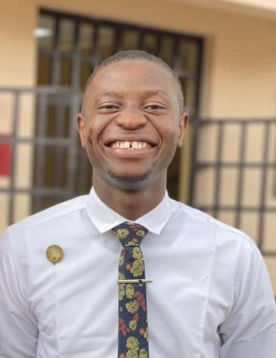
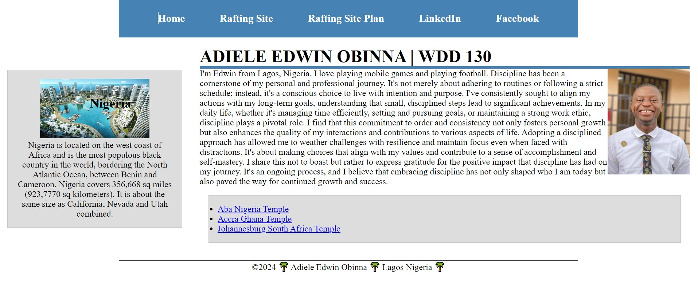

About Me
Hello! I'm Adiele Edwin Obinna, a student of web development passionate about creating dynamic and responsive web pages. I enjoy learning new technologies and applying them to solve real-world problems.

Resource Links:
My Projects
Throughout my journey in web development, I've worked on several interesting projects. Here are a few of them:

Resource Links: